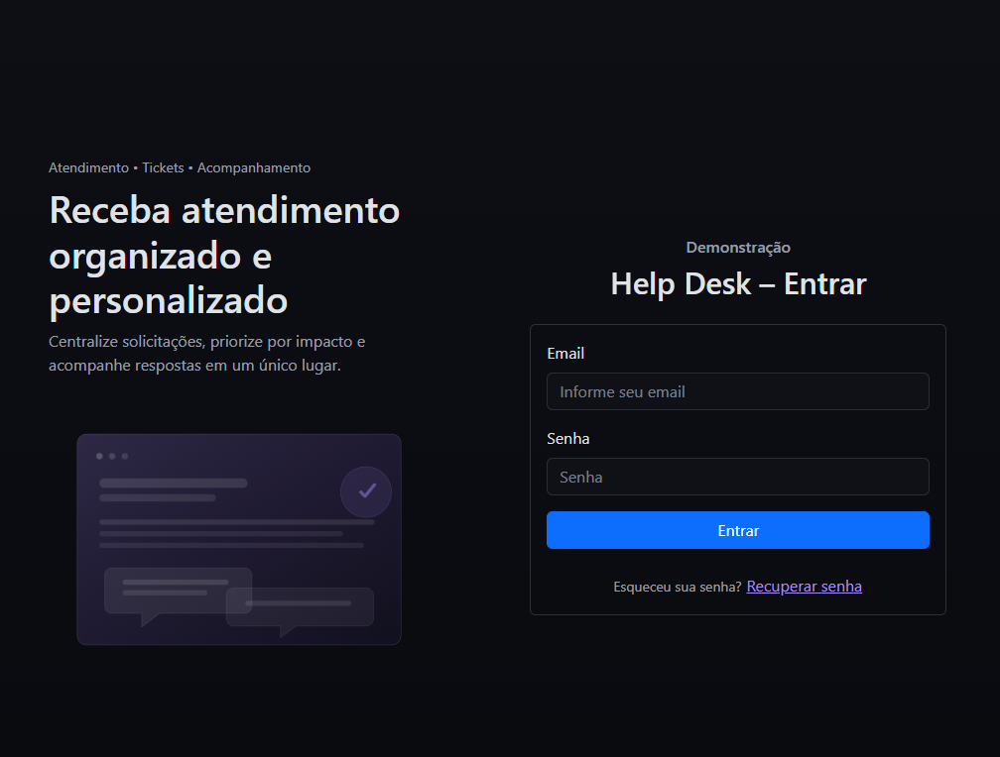
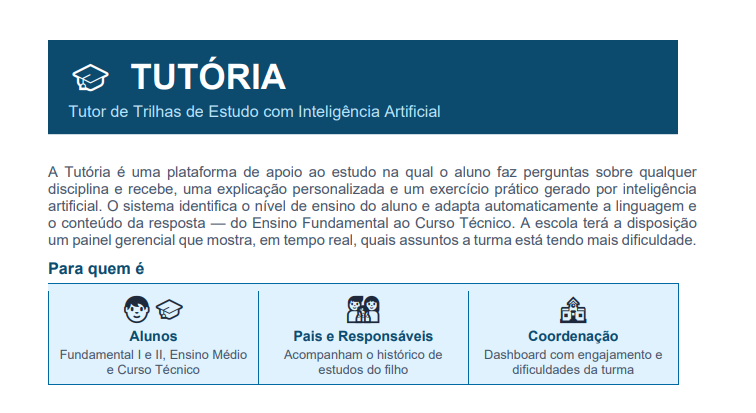

Python
APIs com FastAPI e Flask, automações e organização de projetos em camadas.
Kauã Luiz
Desenvolvedor Backend
Construo APIs e serviços em Python (FastAPI, Flask) com PostgreSQL, empacotados com Docker e entregues na Azure via GitHub Actions.
Stack
Tecnologias e fundamentos que aplico no desenvolvimento de backends.
APIs com FastAPI e Flask, automações e organização de projetos em camadas.
Design de rotas e endpoints, validação de dados e integração entre sistemas.
Modelagem relacional e consultas SQL em PostgreSQL e MySQL.
Containers com Docker, CI/CD com GitHub Actions, deploy na Azure e boas práticas de segurança.
Gosto de resolver problemas complexos e otimizar código — para mim, o backend é o coração de qualquer aplicação.
Trajetória
jul/2025 – jan/2027
Corcovado GeoSub
Desenvolvimento backend em Python, bancos relacionais, Docker e pipelines de CI/CD com GitHub Actions na Azure.
Em andamento
Uninter
Graduação com foco em arquitetura de software, banco de dados e engenharia de requisitos.
Portfólio
Sistemas completos, do modelo de dados à interface.

Sistema corporativo de tickets para abertura e acompanhamento de chamados de suporte entre os setores de uma empresa.
Ver no GitHub
Tutor educacional com IA generativa que adapta linguagem e nível ao perfil do aluno. Inclui gamificação (XP, níveis e conquistas) e painel para responsáveis com controle de acesso por papel.
Ver no GitHubContato
Email: techkaua.business@gmail.com